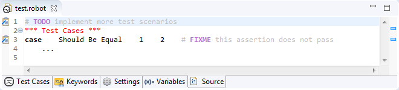

Detecting tasks/TODO defined in comments
It is a common practice to put notes in comments describing some kind of tasks which needs to be done
in future. RED offers possibility to detect such tasks and overview them in single place.
Tasks detection is done during validation phase, so the validation itself has to be enabled too. Once everything is
enabled RED will start reporting special kinds of markers similarly as Problems, but of different type (Task).
For example in following code there are two tasks defined in comments:
# TODO implement more test scenarios
*** Test Cases ***
case
Should Be Equal 1 2 # FIXME this assertion does not pass
...

The detection is based on tags. When defined tag is found by RED inside the comment it will be reported as a
task. By default there are two tags which RED recognizes: TODO and FIXME: the first
one has normal priority while the latter is reported with high priority. The tags and their priorities can
be specified in preferences.

Detected tasks are visible in RED in couple of places:
- Tasks view - this view is similar to Problems view and displays all the tasks reported for files in whole
workspace (this view can be open from menu by choosing Window -> Show View -> Other -> General -> Tasks),
- Source tab of editor - icon is visible in line where task is defined on left vertical ruler as well
as small square on right overview vertical ruler,
- Tables tab of editor - icon is visible on element to which the task is attached on left ruler,
- syntax coloring of comment - the detected tag is colored differently than the rest of the comment both
in source tab as well as tables
Preferences
Following preferences can be changed regarding tasks detection:
- detection enablement - whole mechanism can be enabled or disabled at
Task Tags page,
- tags and their priorities - different tags can be specified at same
Task Tags page,
- tags syntax coloring - the color of syntax hihglighting for task tags can be specified at
Syntax Coloring page,
- marker annotations color and appearance used by editor can be changed at
Annotations page.